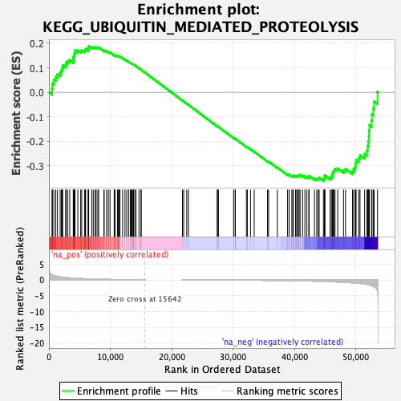
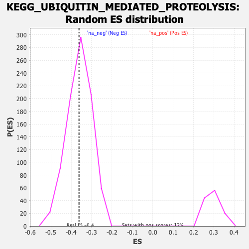

| | | Dataset | prerank |
| Phenotype | NoPhenotypeAvailable |
| Upregulated in class | na_neg |
| GeneSet | KEGG_UBIQUITIN_MEDIATED_PROTEOLYSIS |
| Enrichment Score (ES) | -0.36175945 |
| Normalized Enrichment Score (NES) | -1.0026677 |
| Nominal p-value | 0.4721274 |
| FDR q-value | 1.0 |
| FWER p-Value | 1.0 |
Table: GSEA Results Summary

Fig 1: Enrichment plot: KEGG_UBIQUITIN_MEDIATED_PROTEOLYSIS
Profile of the Running ES Score & Positions of GeneSet Members on the Rank Ordered List
| SYMBOL | RANK IN GENE LIST | RANK METRIC SCORE | RUNNING ES | CORE ENRICHMENT | | 1 | DDB2 | 514 | 1.625 | 0.0141 | No |
| 2 | UBE2L3 | 559 | 1.571 | 0.0361 | No |
| 3 | CBLC | 807 | 1.380 | 0.0516 | No |
| 4 | UBA7 | 1121 | 1.211 | 0.0634 | No |
| 5 | UBE2G1 | 1392 | 1.105 | 0.0744 | No |
| 6 | UBE2G2 | 1834 | 0.963 | 0.0802 | No |
| 7 | FBXW8 | 2036 | 0.904 | 0.0896 | No |
| 8 | UBE2D1 | 2167 | 0.873 | 0.0999 | No |
| 9 | UBE2M | 2244 | 0.856 | 0.1109 | No |
| 10 | SKP2 | 2730 | 0.760 | 0.1130 | No |
| 11 | BIRC3 | 2806 | 0.746 | 0.1224 | No |
| 12 | PIAS4 | 3076 | 0.699 | 0.1276 | No |
| 13 | SOCS3 | 3397 | 0.649 | 0.1310 | No |
| 14 | PML | 3966 | 0.577 | 0.1288 | No |
| 15 | TRIM32 | 3989 | 0.574 | 0.1368 | No |
| 16 | KLHL13 | 4010 | 0.572 | 0.1447 | No |
| 17 | PRPF19 | 4097 | 0.562 | 0.1513 | No |
| 18 | UBE3A | 4179 | 0.550 | 0.1578 | No |
| 19 | UBE2E3 | 4229 | 0.546 | 0.1648 | No |
| 20 | DDB1 | 4236 | 0.545 | 0.1727 | No |
| 21 | UBE2QL1 | 4714 | 0.494 | 0.1709 | No |
| 22 | NEDD4L | 5178 | 0.452 | 0.1689 | No |
| 23 | CDC26 | 5355 | 0.436 | 0.1719 | No |
| 24 | RNF7 | 5811 | 0.398 | 0.1692 | No |
| 25 | PPIL2 | 5947 | 0.389 | 0.1724 | No |
| 26 | FBXO4 | 5981 | 0.387 | 0.1774 | No |
| 27 | SAE1 | 6407 | 0.356 | 0.1746 | No |
| 28 | UBE2S | 6416 | 0.356 | 0.1797 | No |
| 29 | UBE2Z | 6448 | 0.353 | 0.1842 | No |
| 30 | PIAS2 | 6482 | 0.350 | 0.1887 | No |
| 31 | ANAPC7 | 6982 | 0.317 | 0.1840 | No |
| 32 | UBE2J1 | 7230 | 0.302 | 0.1838 | No |
| 33 | UBA1 | 7522 | 0.286 | 0.1825 | No |
| 34 | UBE2F | 7699 | 0.275 | 0.1832 | No |
| 35 | UBE2C | 7968 | 0.260 | 0.1820 | No |
| 36 | RHOBTB2 | 8110 | 0.252 | 0.1831 | No |
| 37 | UBE2L6 | 8970 | 0.210 | 0.1701 | No |
| 38 | CUL1 | 8996 | 0.209 | 0.1726 | No |
| 39 | UBE2N | 9398 | 0.191 | 0.1679 | No |
| 40 | CDC20 | 9688 | 0.176 | 0.1651 | No |
| 41 | PIAS3 | 9959 | 0.165 | 0.1624 | No |
| 42 | UBE3B | 10638 | 0.138 | 0.1518 | No |
| 43 | UBE3C | 10753 | 0.134 | 0.1516 | No |
| 44 | ERCC8 | 10761 | 0.134 | 0.1534 | No |
| 45 | CUL2 | 11168 | 0.119 | 0.1476 | No |
| 46 | CDC23 | 11328 | 0.113 | 0.1463 | No |
| 47 | MDM2 | 11361 | 0.112 | 0.1473 | No |
| 48 | UBE2Q2 | 11498 | 0.108 | 0.1463 | No |
| 49 | FZR1 | 11575 | 0.106 | 0.1464 | No |
| 50 | BTRC | 12005 | 0.093 | 0.1398 | No |
| 51 | MID1 | 12398 | 0.080 | 0.1336 | No |
| 52 | UBE2J2 | 12684 | 0.071 | 0.1293 | No |
| 53 | UBE2E2 | 12986 | 0.062 | 0.1246 | No |
| 54 | FBXO2 | 13261 | 0.054 | 0.1203 | No |
| 55 | BRCA1 | 13379 | 0.051 | 0.1188 | No |
| 56 | CDC27 | 13529 | 0.047 | 0.1167 | No |
| 57 | UBE2D4 | 13705 | 0.042 | 0.1141 | No |
| 58 | ANAPC4 | 13754 | 0.041 | 0.1138 | No |
| 59 | CUL5 | 13782 | 0.040 | 0.1138 | No |
| 60 | CDC34 | 13987 | 0.034 | 0.1105 | No |
| 61 | RBX1 | 14190 | 0.029 | 0.1072 | No |
| 62 | UBE4B | 14680 | 0.019 | 0.0983 | No |
| 63 | FANCL | 15022 | 0.011 | 0.0921 | No |
| 64 | KEAP1 | 15035 | 0.011 | 0.0920 | No |
| 65 | ANAPC10 | 21764 | -0.000 | -0.0337 | No |
| 66 | ANAPC13 | 21965 | -0.005 | -0.0373 | No |
| 67 | TRIM37 | 22464 | -0.010 | -0.0465 | No |
| 68 | ANAPC5 | 22743 | -0.015 | -0.0515 | No |
| 69 | RCHY1 | 27431 | -0.046 | -0.1384 | No |
| 70 | SYVN1 | 27459 | -0.047 | -0.1382 | No |
| 71 | NEDD4 | 27635 | -0.050 | -0.1407 | No |
| 72 | ANAPC2 | 30099 | -0.057 | -0.1859 | No |
| 73 | UBE2D3 | 30365 | -0.061 | -0.1900 | No |
| 74 | UBE2K | 30373 | -0.061 | -0.1892 | No |
| 75 | XIAP | 32192 | -0.073 | -0.2221 | No |
| 76 | STUB1 | 32340 | -0.076 | -0.2238 | No |
| 77 | SOCS1 | 32856 | -0.079 | -0.2323 | No |
| 78 | PRKN | 33460 | -0.087 | -0.2422 | No |
| 79 | HERC2 | 35625 | -0.121 | -0.2809 | No |
| 80 | UBE2A | 35803 | -0.124 | -0.2824 | No |
| 81 | UBE2O | 37230 | -0.157 | -0.3068 | No |
| 82 | WWP2 | 38901 | -0.202 | -0.3350 | No |
| 83 | DET1 | 39151 | -0.209 | -0.3366 | No |
| 84 | KLHL9 | 39590 | -0.224 | -0.3416 | No |
| 85 | UBA3 | 39761 | -0.230 | -0.3414 | No |
| 86 | COP1 | 39829 | -0.233 | -0.3392 | No |
| 87 | SKP1 | 40190 | -0.246 | -0.3424 | No |
| 88 | NHLRC1 | 40379 | -0.253 | -0.3422 | No |
| 89 | UBE2Q1 | 40559 | -0.259 | -0.3418 | No |
| 90 | SMURF2 | 40596 | -0.261 | -0.3387 | No |
| 91 | PIAS1 | 40779 | -0.268 | -0.3382 | No |
| 92 | HUWE1 | 40938 | -0.275 | -0.3371 | No |
| 93 | UBA6 | 41340 | -0.290 | -0.3404 | No |
| 94 | HERC4 | 41717 | -0.305 | -0.3429 | No |
| 95 | CUL3 | 42038 | -0.317 | -0.3443 | No |
| 96 | CUL4B | 42356 | -0.332 | -0.3454 | No |
| 97 | UBE2E1 | 42416 | -0.335 | -0.3416 | No |
| 98 | UBE2H | 43276 | -0.378 | -0.3522 | No |
| 99 | UBE2B | 43656 | -0.396 | -0.3535 | No |
| 100 | WWP1 | 43892 | -0.408 | -0.3519 | No |
| 101 | CUL7 | 44046 | -0.417 | -0.3487 | No |
| 102 | UBE2U | 44746 | -0.459 | -0.3551 | Yes |
| 103 | ELOB | 44892 | -0.467 | -0.3510 | Yes |
| 104 | SMURF1 | 44961 | -0.471 | -0.3454 | Yes |
| 105 | UBE4A | 44971 | -0.471 | -0.3387 | Yes |
| 106 | BIRC2 | 45834 | -0.532 | -0.3471 | Yes |
| 107 | UBE2W | 46038 | -0.547 | -0.3429 | Yes |
| 108 | UBE2R2 | 46198 | -0.559 | -0.3377 | Yes |
| 109 | UBE2D2 | 46249 | -0.564 | -0.3305 | Yes |
| 110 | HERC1 | 46324 | -0.570 | -0.3235 | Yes |
| 111 | TRAF6 | 46504 | -0.586 | -0.3183 | Yes |
| 112 | ANAPC11 | 46626 | -0.597 | -0.3119 | Yes |
| 113 | ELOC | 47066 | -0.634 | -0.3109 | Yes |
| 114 | HERC3 | 48012 | -0.725 | -0.3180 | Yes |
| 115 | ANAPC1 | 48347 | -0.761 | -0.3131 | Yes |
| 116 | UBA2 | 49477 | -0.900 | -0.3211 | Yes |
| 117 | CBLB | 49678 | -0.927 | -0.3114 | Yes |
| 118 | FBXW7 | 49941 | -0.965 | -0.3022 | Yes |
| 119 | VHL | 49991 | -0.972 | -0.2890 | Yes |
| 120 | MAP3K1 | 50063 | -0.984 | -0.2760 | Yes |
| 121 | SIAH1 | 50493 | -1.070 | -0.2684 | Yes |
| 122 | TRIP12 | 50700 | -1.109 | -0.2561 | Yes |
| 123 | ITCH | 51460 | -1.295 | -0.2514 | Yes |
| 124 | BIRC6 | 51840 | -1.416 | -0.2379 | Yes |
| 125 | MGRN1 | 51942 | -1.460 | -0.2185 | Yes |
| 126 | UBE2I | 52062 | -1.502 | -0.1989 | Yes |
| 127 | UBE2NL | 52141 | -1.534 | -0.1780 | Yes |
| 128 | FBXW11 | 52170 | -1.546 | -0.1560 | Yes |
| 129 | UBR5 | 52232 | -1.572 | -0.1342 | Yes |
| 130 | CDC16 | 52586 | -1.771 | -0.1151 | Yes |
| 131 | UBOX5 | 52647 | -1.801 | -0.0899 | Yes |
| 132 | CUL4A | 52859 | -1.958 | -0.0654 | Yes |
| 133 | CBL | 52998 | -2.094 | -0.0374 | Yes |
| 134 | AIRE | 53558 | -3.414 | 0.0018 | Yes |
Table: GSEA details [plain text format]

Fig 2: KEGG_UBIQUITIN_MEDIATED_PROTEOLYSIS: Random ES distribution
Gene set null distribution of ES for KEGG_UBIQUITIN_MEDIATED_PROTEOLYSIS